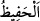

Allah Teâlâ cevheri saf hale getirmek için ateşi madenlere musallat ettiği gibi insanlık
madenlerinden insanların cevherlerini ortaya çıkartmak için ancak şeytanı
Âdemoğullarına musallat etmiştir. Eğer cevher altın ise saflaştırma ameliyesinin
sonunda altın ortaya çıkar. Cevher bakır ise bakır ortaya çıkar. Ateş bakır madeninden
altın, altın madeninden de bakır çıkaramaz. İşte Allah şeytanı insanlara musallat eyledi.
Çünkü insanlar da aynen altın ve gümüş madenleri gibidir. Şeytan ise ateştendir.
Vesveselerini üfleyerek insanların cevherlerini madenlerinden çıkarır. Ancak her
madenden, cevheri ne ise, onu çıkarabilir.
Toprakta şeker kamışı ve adî kamış olsa da,
Her yerin tercümanı onun bitkisidir.
Bazıları der ki: Âyetteki ‘bilmek’ ayırdetmekten mecazdır. Buna göre âyetin mânâsı
şöyledir: ‘Ancak âhirete inananı, âhiret hakkında şüphe içinde olandan ayırdolsun
diye…’ Dolayısıyla şeytanın musallat kılınmasının sebebi olarak ‘bilmek’ gösterilmiş,
onun gerektirdiği (ayırdetmek) kasdedilmiştir.
“Rabbin gerçekten her şeyi koruyandır.” “__WORD__ muhâfız, koruyan, görüp gözeten
demektir. Bazıları der ki: “__WORD__ her şeyi olduğu gibi koruyan demektir. Bu kelime
kullar hakkında kullanıldığında korumakla memur olduğu organları, şer’î hükümleri,
emânetleri koruyan kimsedir. Böyle bir kimse dînini, öfkenin şiddetinden, şehvetin
aldatmasından, nefsin hilesinden ve şeytanın yanıltmasından korur. Çünkü o kendisini
helâke götürecek bu kötü melekeler tarafından kuşatılmıştır. Yıkılacak bir uçurumun
kenarındadır.
Hakîmlerden birisi der ki: “Hâfızanın kuvvetli olmasının sebepleri, özen ve azimle
çalışma ve devamlılık, ma’sıyetleri terk etmek, misvak kullanmak, gıdayı azaltmak, gece
namazı, yüzüne Kur’an okumak, bal şerbeti içmek, şekerle beraber kendir yemek, her
gün aç karnına yirmi bir tane kırmızı kuru üzüm yemektir.
Bu “el-Hafîz” isminin husûsiyetlerinden birisi de bu ismi yazıp üzerine asan kişi
yırtıcı hayvanların arasında yatıp uyusa da ona zarar vermezler.
Allah Teâlâ’nın koruması hakkında Zünnûn (r.h.) der ki: “Kalbime bir üzüntü çöktü
ve Nil kenarına çıktım. Orada süratle giden bir akrep gördüm ve onu takip ettim. Akrep
nehrin kenarında bir kurbağaya ulaştı. Kurbağanın sırtına binip karşıya geçti. Ben de
gemiye binip onu takip ettim. Karşı sahilde akrep kurbağanın sırtından indi ve hemen
uyuyan bir gencin yanına vardı. Gencin yanında genci sokmak üzere olan bir yılan vardı.
Akrep ve yılan birbirleri üzerine sıçrayıp birbirlerini sokup zehirlediler ve öldüler.
Böylece uyuyan genç sağ salim kurtuldu.”
İbrahim Havvâs (k.s.) der ki: “Mekke yolunda geceleyin bir harâbeye girdim. Bir de
ne göreyim orada büyük bir canavar var. Korkuya kapıldım. Bunun üzerine gaibden bir
ses bana: “Yerinde dur ve metin ol. Çünkü etrafında seni koruyan yetmiş bin melek var.”
diye seslendi.”
İşte bu, Allah’ın dostlarına olan lütfundandır. Bir melek kişinin karşılığını alması için
onun amelini kaydeder. Diğer bir melek ise kişiden âfetleri bertaraf eder.